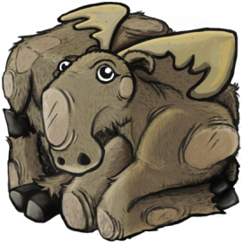

{% extends "app/layout.html" %}

{% block content %}

<h2>{{ title }}</h2>
<hr>

<h3>{{ message }}</h3>

<div class="row">
    <div class="col-md-8">
        <label>
            Создатель инди-игр Стив Габри из Питтсбурга, отмеченный наградами, занимается созданием популярных игр уже 11 лет. Как основатель Portable Moose (2015),
            Стив наиболее известен своим сольным созданием мрачной приключенческой игры Sally Face (2016-2019). Он носит множество шляп, в том числе художника, музыканта,
            писателя и геймдизайнера, и часто черпает вдохновение в своих мечтах.
        </label>
        <label>
            Карьера Стива также включает в себя соучредительство Wither Studios (2010, разработчик игр) и работу с ними в качестве креативного директора Crowman & Wolfboy (2013,
            мобильный платформер), художника / дизайнера в Immure (2019, психологический хоррор) и художника / дизайнера в Touched by an Outer God (2020, экшн кадры ужасов).
        </label>
    </div>
</div>
{% endblock %}
